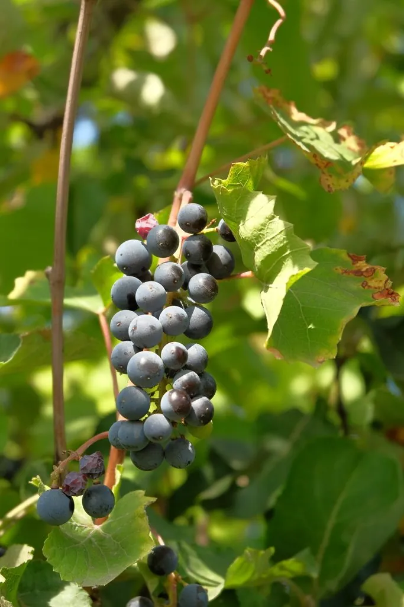

农作物与经济植物 · 植物界
葡萄 Vitis vinifera

葡萄是栽培历史最悠久的果树之一，果实可鲜食、制干和酿酒，葡萄酒文化在欧亚大陆源远流长，品种繁多。
- 分类
- 门被子植物门纲双子叶植物纲目葡萄目科葡萄科属葡萄属
- 栖息环境
- 温带与亚热带干燥丘陵，喜光照充足、昼夜温差大与排水良好
- 地理分布
- 原产地中海与西亚，现主产于中国、意大利、法国、西班牙等地
- 保护级别
- 暂无评估（栽培果树）
物种志
葡萄是葡萄科落叶木质藤本，茎为藤蔓，具卷须，可攀援而上。叶互生，掌状分裂，边缘有锯齿，叶背常具茸毛。花小，黄绿色，圆锥花序，多为两性花，自花或异花授粉。果实为浆果，成串生长，果皮颜色有绿、黄、红、紫、黑等，果肉多汁，内含种子。不同品种的果粒大小、风味和含糖量差异很大，酿酒品种与鲜食品种各有专用。
葡萄原产西亚、地中海沿岸一带，约 7000 年前在高加索地区被驯化，古埃及、古希腊和古罗马都有发达的葡萄酒文化，汉代张骞出使西域后传入中国。葡萄喜温暖干燥、光照充足、昼夜温差大的气候，适宜在排水良好的沙壤土中栽培，多采用扦插或嫁接繁殖。果实富含葡萄糖、果酸和多酚，鲜食之外还可制葡萄干、果汁和葡萄酒；葡萄籽可提取原花青素。中国新疆、河北、山东等地是主产区。
形态与习性
- 藤本具卷须，可攀援生长
- 叶掌状分裂，边缘有锯齿
- 果实浆果，成串生长
- 繁殖扦插或嫁接繁殖
- 主要用途鲜食、制干与酿酒
- 原产地西亚与地中海沿岸
- 主要成分葡萄糖、果酸与多酚
趣味知识
- 葡萄的卷须由花序退化而来，能帮藤蔓攀住支架。
- 酿酒葡萄和鲜食葡萄是不同的品种，前者糖分高、果粒小。
- 葡萄表面的白霜是果粉，能保护果实，不是农药残留。